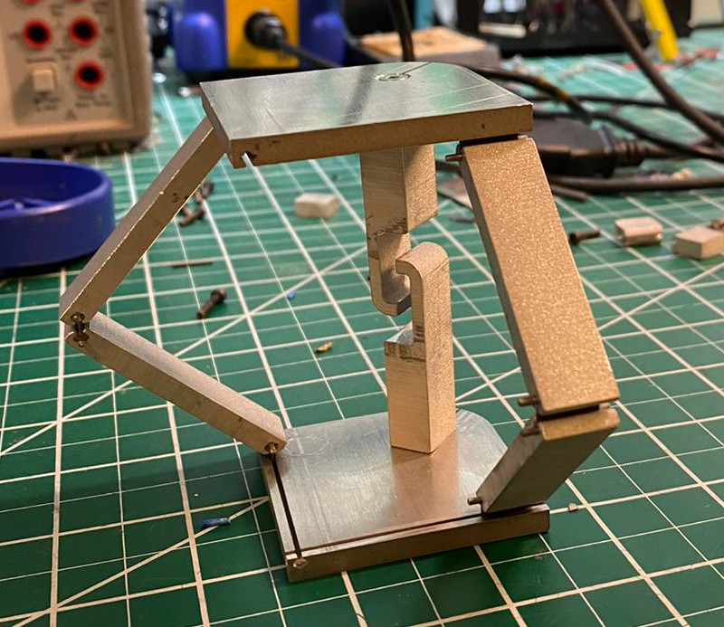
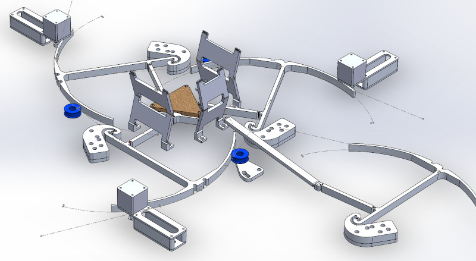
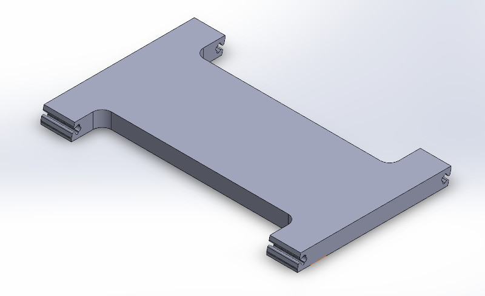

Axis-O-Sarrus
The Z-axis for this machine should be independent of the planar axes. Continuing the theme of avoiding sliding or rolling elements for motion constraint, a Sarrus linkage presents an interesting alternative for ensuring uniaxial actuation. I built a prototype out of aluminum and installed a handful of modular flexures along with a pair of travel limit hooks:
The base and top plate required a pair of fussy ~50 mm wire-EDM cuts. I tried to avoid repeating this operation on the side panels and used 12.7 mm waterjet cut beams for these linkages; unfortunately, I didn't give much thought to how this would underconstrain the assembly; in the video below, you can see a slight wobble as the stage is cycled:
Yes... as it turns out, the sides need some width to resist shear forces.
I started putzing together a design that integrates with the existing 3-RRR parallel manipulator:

The design involves a number of thick WEDM cuts, on the order of ~80 mm. My guess is I'll need to cut these details as continuous grooves, and then waterjet the relief out of the center; otherwise WEDM flushing water won't reach the lower half of the cut and the wire will short:

I haven't yet decided to embark on this journey; the Axis-O-Sarrus would quadruple the number of superelastic flexures needed, and the extra off-axis linkage required to keep the umbrella linkage flat may reduce the axis stiffness to an unacceptable degree. For now, next steps are probably (finally) thinking about kinematics and quantifying stage flatness across its working area.